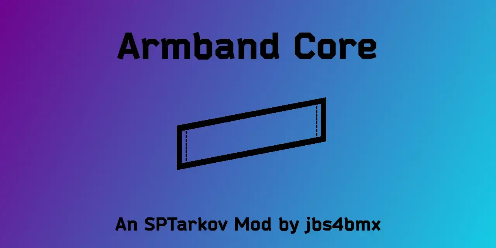
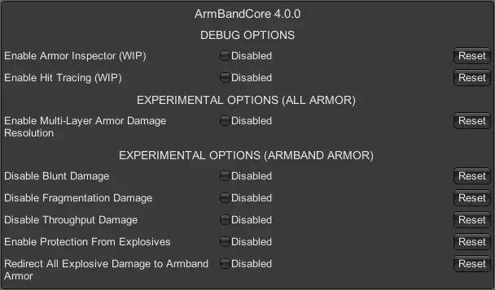

ArmBandCore
- Downloads
- 1,063
- Favourites
- 1
- Mod lists
- 1
MERGED
- Further development and support of this mod has been merged with Holtzman Shield.
This API mod will still be maintained.

Details
- This is a client-side mod that changes the “EquipmentSlot ArmorSlot” method to allow armbands to count as armor. Without it, the method doesn’t include armbands and there won’t treat the armband slot as an armor slot.
- With this mod, you can combine it with other mods that give armbands armor properties, and shield yourself without taking up inventory space or adding additional weight to your PMC.
- There are additional functions and debugging tools (WIP) for modders/users to use while developing/gaming.
Modders
- This mod can be used by anyone that wants to include armored armbands in their mods. You can:
- Specify this mod as a dependency
- Include this mod pre-packaged with your mod… just credit me please.
Derived Work
- Below are examples of mods that implemented a custom armor item using the armband (active development of each item may be discontinued by the associated author):
| NAME | Author | Notes |
|---|---|---|
| Holtzman Shield | jbs4bmx | The original modified armband. (Active) |
| Body Blessings | ShadowXtrex | Includes custom armbands. |
| Single Player Overhaul | (SPO)gabe_over | Modified version Holtzman Shield. |
| Limb Armor | Rhyufer / Felyx | Modified versions of armbands. |
Incompatibilities
- FIKA - No; I will not be adding it in the future.
- The options shown below are available for this mod (F12 Menu).

Notes
- Enabling ‘blunt force removal’ and ‘throughput removal’ at the same time basically makes you invincible to firearms.
- Enabling ‘blunt force removal’, ‘throughput removal’, ‘explosive redirection’, and ‘fragmentation redirection’ at the same time basically makes you invincible to both firearms and explosives. (Concussion still takes affect.)
- Redirecting explosive damage to armband armor requires that “Enable Protection From Explosive” is set to True.
- Multi-layer armor damage resolution will split all armor damage between the armor you’re wearing and an armored armband if you are wearing one. The split is 50/50.
- Debugging options are for mod developers and not intended to be used during gameplay unless troubleshooting an active issue.
- A pseudo “God mode” can be achieved by wearing an armored armband and enabling all options under “EXPERIMENTAL OPTIONS (ARMBAND ARMOR)”.
Extract the contents of the zip file to the “root” of your SPT folder.
- The same location as ‘EscapeFromTarkov.exe’.
Delete the “ArmBandCore.dll” file from the “[SPT]/BepInEx/plugins” folder.
Mod Source
Author’s Notes
- Compatibility with other mods is neither expressed nor implied. (Attempts will be made to correct this, but cannot be guaranteed.)
- Support is neither expressed nor implied. (There is no guarantee of expedited or resultant service.)
- Support is definitely NOT given to earlier versions of the mod.
Issues
- If you would like to report an issue, please keep the report short and concise.
- Reporting of issues is okay.
- Reporting on mod incompatibility is okay.
- Complaining about how the mod functions, whether good or bad, is NOT okay.
- Be civil or you will be ignored.
- This is definitely not required and you have every right to ignore this tab, but if you would still like to buy me a coffee, I’d greatly appreciate it. Any and all proceeds will go towards further development/maintenance of mods.
Version
4.0.1
Overview
Major Update - Happy New Year. This update introduces a full suite of experimental armor‑handling features centered around the Armband armor slot, along with expanded multi‑armor support, explosive redirection, and optional damage‑type suppression. The mod now provides a flexible, slot‑specific armor framework that integrates cleanly with EFT 0.16’s damage pipeline.
Update - Version support for SPT 4.0.0+ and EFT 0.16.9.0.40087
Update - License, Copyright, and versioning information.
New Features
- Multi‑Layer Armor Damage Resolution (Experimental)
- Ballistic armor damage can now be distributed across multiple worn armor pieces.
- Armband armor participates fully in ballistic damage sharing.
- Configurable toggle: Enable Multi-Layer Armor Damage Resolution.
- Explosive Damage Redirection (Armband‑Only Experimental System)
- Explosive damage can now be redirected away from the player and into armor durability.
- Optional mode to redirect all explosive damage exclusively to the armband armor.
- Configurable toggles:
- Enable Protection From Explosives
- Redirect All Explosive Damage to Armband Armor
- Throughput Damage Suppression (Armband‑Only)
- Prevents ballistic and explosive throughput damage from reaching the player.
- Only applies when armband armor is equipped.
- Configurable toggle: Disable Throughput Damage.
- Blunt Damage Suppression (Armband‑Only)
- Blocks all blunt trauma damage that would normally bypass armor.
- Only applies when armband armor is equipped.
- Configurable toggle: Disable Blunt Damage.
- Fragmentation Damage Suppression (Armband‑Only)
- Blocks grenade fragmentation damage from reaching the player.
- Only applies when armband armor is equipped.
- Configurable toggle: Disable Fragmentation Damage.
Technical Improvements
- Added ArmbandArmorHelper
- Centralized helper for retrieving the armband armor component.
- Ensures all armband‑specific features behave consistently.
- Updated Damage Pipeline Patches
- Added patches for:
- Player.ApplyExplosionDamageToArmor
- Player.ApplyDamageInfo
- Ensures correct interception of ballistic, explosive, blunt, and fragmentation damage.
- Cleaned Up Legacy Code
- Removed unused variables and outdated method signatures.
- Updated all patches to match EFT 0.16.9’s API.
- Ensured compatibility with SPT 4.0.0.
Debugging Tools
- Hit Tracing (WIP)
- Optional detailed logging of ballistic impacts.
- Armor Inspector (WIP)
- Optional logging of detected armor components. Both are disabled by default.
Notes
- All “Armband Armor” experimental options only activate when the player is wearing armor in the Armband slot.
- Multi‑Layer Armor remains a global system and affects all armor pieces.
- This release is fully compatible with EFT 0.16.9 and SPT 4.0.0.
- Virus Total Results: